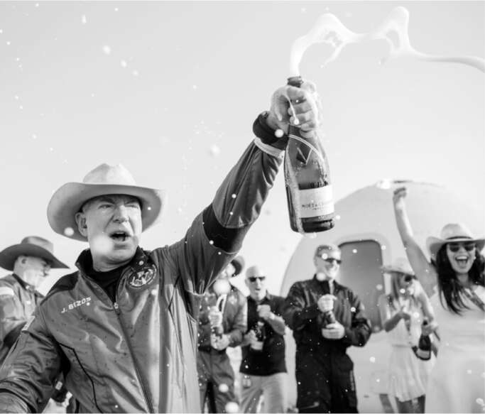
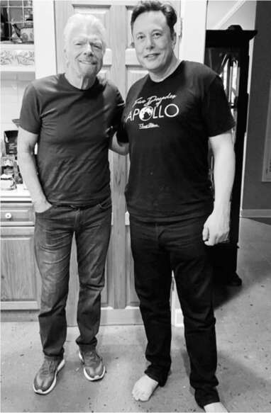

Khiêu khích lẫn nhau
Jeff Bezos và Elon Musk đã có những cuộc cạnh tranh gay gắt từ năm 2013, bắt đầu bằng việc giành quyền thuê bệ phóng 39A lịch sử tại Cape Canaveral (Musk thắng), rồi đến việc ai là người đầu tiên hạ cánh thành công tên lửa lên rìa vũ trụ (Bezos), hạ cánh tên lửa đã lên quỹ đạo (Musk), và đưa con người vào quỹ đạo (Musk). Vũ trụ là niềm đam mê của cả hai, và sự cạnh tranh của họ - giống như cuộc đua của các ông trùm đường sắt một thế kỷ trước - đã thúc đẩy lĩnh vực này phát triển. Bất chấp những lời chỉ trích cho rằng không gian đang trở thành thú vui của các tỷ phú, tầm nhìn tư nhân hóa các vụ phóng của họ đã đưa nước Mỹ, vốn đã tụt hậu so với Trung Quốc và thậm chí cả Nga, trở lại vị trí dẫn đầu trong lĩnh vực khám phá vũ trụ.
Cuộc cạnh tranh bùng lên trở lại vào tháng 4 năm 2021, khi SpaceX đánh bại Blue Origin của Bezos trong hợp đồng đưa các phi hành gia NASA vào chặng cuối cùng của hành trình lên mặt trăng. Blue Origin đã kháng cáo nhưng không thành công. Trang web của họ hiển thị một hình ảnh chỉ trích kế hoạch của SpaceX, với những dòng chữ lớn gọi đó là "vô cùng phức tạp" và "rủi ro cao". SpaceX đáp trả bằng cách chỉ ra rằng Blue Origin "chưa sản xuất được một tên lửa hay tàu vũ trụ nào có khả năng lên tới quỹ đạo". Người hâm mộ Musk trên Twitter đã chế giễu Blue Origin, và Musk cũng tham gia. "Không thể lên (quỹ đạo) lol," ông đăng trên Twitter.
Bezos và Musk có những điểm tương đồng. Cả hai đều tạo ra đột phá trong ngành bằng niềm đam mê, sự đổi mới và ý chí mạnh mẽ. Cả hai đều thẳng thắn với nhân viên, sẵn sàng gọi mọi thứ là ngu ngốc, và tức giận với những người nghi ngờ và phản đối. Và cả hai đều tập trung vào việc hình dung tương lai hơn là theo đuổi lợi nhuận ngắn hạn. Khi được hỏi liệu ông có biết đánh vần từ "lợi nhuận" không, Bezos trả lời, "P-r-o-p-h-e-t (nhà tiên tri)".
Nhưng khi đi sâu vào chi tiết kỹ thuật, họ lại khác nhau. Bezos làm việc rất bài bản. Phương châm của ông là gradatim ferociter, hay "Từng bước một, mạnh mẽ". Bản năng của Musk là thúc đẩy và dẫn dắt mọi người hướng tới những thời hạn gấp gáp, ngay cả khi điều đó có nghĩa là chấp nhận rủi ro.
Bezos tỏ ra hoài nghi, thậm chí bác bỏ việc Musk dành hàng giờ trong các cuộc họp kỹ thuật để đưa ra các đề xuất và ban hành mệnh lệnh đột ngột. Ông cho biết các cựu nhân viên tại SpaceX và Tesla nói với ông rằng Musk hiếm khi am hiểu như những gì ông tuyên bố và sự can thiệp của ông thường không hữu ích hoặc hoàn toàn gây ra vấn đề.
Về phần mình, Musk cảm thấy Bezos là một người thiếu tập trung, việc ông không chú trọng vào kỹ thuật là một trong những lý do khiến Blue Origin đạt được ít tiến bộ hơn SpaceX. Trong một cuộc phỏng vấn vào cuối năm 2021, ông miễn cưỡng khen ngợi Bezos vì có "năng khiếu kỹ thuật khá tốt", nhưng sau đó nói thêm, "Nhưng dường như ông ấy không sẵn sàng dành năng lượng tinh thần để đi sâu vào chi tiết kỹ thuật. Quỷ dữ nằm trong chi tiết."
Giờ đây, khi Musk đã bán tất cả nhà cửa và sống trong một căn nhà thuê ở Texas, ông cũng bắt đầu coi thường lối sống xa hoa với nhiều biệt thự của Bezos. "Theo một cách nào đó, tôi đang cố gắng kích thích ông ấy dành nhiều thời gian hơn cho Blue Origin để họ đạt được nhiều tiến bộ hơn", Musk nói. "Ông ấy nên dành nhiều thời gian hơn ở Blue Origin và ít thời gian hơn trong bồn tắm nước nóng."
Một tranh chấp khác nổ ra liên quan đến các công ty truyền thông vệ tinh đối thủ của họ. Đến mùa hè năm 2021, SpaceX đã triển khai gần hai nghìn vệ tinh Starlink vào quỹ đạo. Dịch vụ internet không gian của họ đã có mặt tại mười bốn quốc gia. Bezos đã công bố kế hoạch vào năm 2019 cho Amazon tạo ra một chòm sao vệ tinh và dịch vụ internet tương tự, được gọi là Project Kuiper. Nhưng cho đến nay, chưa có vệ tinh nào được phóng.
Musk tin rằng đổi mới đến từ việc đặt ra các chỉ số rõ ràng, chẳng hạn như chi phí cho mỗi tấn hàng được đưa lên quỹ đạo hoặc số dặm trung bình xe tự lái mà không cần sự can thiệp của con người. Với Starlink, ông khiến Juncosa ngạc nhiên khi hỏi có bao nhiêu photon được thu thập bởi các tấm pin mặt trời của vệ tinh so với số lượng chúng có thể truyền xuống Trái đất. Đó là một tỷ lệ rất lớn—có lẽ là 10.000 trên 1—và Juncosa chưa bao giờ nghĩ đến điều đó. “Tôi chắc chắn chưa bao giờ nghĩ về điều này như một chỉ số,” ông nói. “Nó buộc tôi phải suy nghĩ sáng tạo về cách chúng ta có thể cải thiện hiệu quả.”
Điều này đã dẫn SpaceX đến việc phát triển phiên bản thứ hai của Starlink, và họ đã nộp đơn xin phê duyệt từ Ủy ban Truyền thông Liên bang. Đơn xin phép đã hạ thấp độ cao quỹ đạo dự kiến cho các Starlink trong tương lai, điều này sẽ làm giảm độ trễ của mạng.
Điều đó sẽ đặt chúng gần với quỹ đạo dự kiến của chòm sao Kuiper cạnh tranh của Bezos, vì vậy Bezos đã nộp đơn phản đối. Một lần nữa, Musk lại công kích ông trên Twitter, cố tình viết sai tên ông thành từ tiếng Tây Ban Nha có nghĩa là “nụ hôn”: “Hóa ra Besos đã nghỉ hưu để theo đuổi công việc toàn thời gian là kiện SpaceX.” Ủy ban Truyền thông Liên bang phán quyết rằng kế hoạch của Musk có thể tiếp tục.
Những chuyến du hành của tỷ phú
Một trong những giấc mơ của Bezos là được tự mình bay vào vũ trụ. Vì vậy, vào mùa hè năm 2020, giữa lúc tranh chấp với Musk, ông tuyên bố rằng ông và em trai Mark sẽ bay đến rìa vũ trụ (mặc dù không vào quỹ đạo) trong một chuyến bay mười một phút trên tên lửa Blue Origin. Ông sẽ là tỷ phú đầu tiên bay vào vũ trụ.
Sir Richard Branson, vị tỷ phú người Anh luôn tươi cười, người sáng lập Virgin Airlines và Virgin Music, cũng có giấc mơ đó. Ông đã tạo ra công ty du hành vũ trụ của riêng mình, Virgin Galactic, với mô hình kinh doanh chủ yếu phụ thuộc vào việc đưa những người giàu có tìm kiếm trải nghiệm vào các chuyến du ngoạn. Tài năng tiếp thị của ông bao gồm việc sử dụng chính mình làm gương mặt đại diện và linh hồn của công ty. Ông biết rằng không có cách nào tốt hơn để quảng bá cho doanh nghiệp du lịch vũ trụ của mình và tự mình tận hưởng niềm vui (điều mà ông rất thích làm) hơn là bay lên một trong những tên lửa của mình. Vì vậy, sau khi Bezos không thể thay đổi ngày phóng, Branson đã thông báo rằng ông sẽ bay vào ngày 11 tháng 7, sớm hơn chín ngày. Luôn là một người thích trình diễn, ông đã mời Stephen Colbert làm người dẫn chương trình trực tiếp và ca sĩ Khalid biểu diễn một bài hát mới cho dịp này.
Khi Branson thức dậy ngay trước 1 giờ sáng ngày phóng, ông đi vào bếp của ngôi nhà ông đang ở và thấy Musk đang đứng đó với Baby X. “Elon thật dễ thương khi xuất hiện cùng đứa con mới sinh của mình trong chuyến bay của chúng tôi,” Branson nói. Musk đi chân trần và mặc một chiếc áo phông đen có in dòng chữ “Năm thập kỷ của Apollo” kỷ niệm năm mươi năm sứ mệnh mặt trăng. Họ ngồi xuống và nói chuyện trong vài giờ. “Anh ấy dường như không ngủ nhiều,” Branson nói.
Chuyến bay, trên một tên lửa có cánh dưới quỹ đạo được nâng lên độ cao phóng trên một máy bay chở hàng, đã diễn ra tốt đẹp. Branson và năm nhân viên của Virgin Galactic đã đạt đến độ cao 53,6 dặm, gây ra một cuộc tranh luận nhỏ về việc liệu họ đã đến được “vũ trụ” hay chưa, được NASA định nghĩa là bắt đầu từ năm mươi dặm so với Trái đất nhưng các quốc gia khác định nghĩa là đường Kármán, ở độ cao sáu mươi hai dặm.
Chuyến bay của Bezos chín ngày sau đó cũng thành công. Tất nhiên, Musk đã không tham dự chuyến bay đó. Bezos, em trai của ông và phi hành đoàn đã đạt đến độ cao sáu mươi sáu dặm, vượt xa đường Kármán, mang lại cho ông thêm một chút tự hào. Tàu vũ trụ của họ đã hạ cánh nhẹ nhàng bằng dù xuống sa mạc Texas, nơi mẹ ông đang rất lo lắng và cha ông bình tĩnh hơn đang chờ đợi.
Musk dành chút lời khen ngợi dè dặt cho Bezos và Branson. "Tôi thấy việc họ đầu tư vào phát triển không gian thật tuyệt vời", ông nói với Kara Swisher tại Hội nghị Code vào tháng 9. Nhưng ông cũng chỉ ra rằng việc bay lên độ cao sáu mươi dặm chỉ là một bước nhỏ. "Để so sánh cho dễ hiểu, bạn cần năng lượng gấp khoảng một trăm lần để lên quỹ đạo so với quỹ đạo phụ", ông giải thích. "Và sau đó, để quay trở lại từ quỹ đạo, bạn cần đốt cháy năng lượng đó, vì vậy bạn cần một tấm chắn nhiệt chịu lực cao. Lên quỹ đạo khó hơn khoảng hai bậc so với quỹ đạo phụ."
Musk luôn mang tư tưởng nghi kỵ, khiến ông tin rằng phần lớn những bài báo tiêu cực về mình là do động cơ ngầm hoặc lợi ích mờ ám của những người sở hữu các tổ chức tin tức. Điều này đặc biệt rõ ràng khi Bezos mua tờ Washington Post. Khi tờ báo liên hệ với Musk về một câu chuyện họ đang đưa tin vào năm 2021, ông đã gửi một email chỉ vỏn vẹn: "Gửi lời hỏi thăm của tôi đến ông chủ rối của anh". Trên thực tế, Bezos luôn đáng ngưỡng mộ vì không can thiệp vào việc đưa tin của tờ Post, và phóng viên không gian uy tín của họ, Christian Davenport, thường xuyên đăng tải những bài viết ghi lại thành công của Musk, bao gồm cả một bài về sự cạnh tranh giữa ông với Bezos. "Hiện tại, Musk đang dẫn đầu ở hầu hết mọi lĩnh vực", Davenport viết. "SpaceX đã đưa ba nhóm phi hành gia lên Trạm Vũ trụ Quốc tế và vào thứ Ba dự kiến sẽ phóng một phi hành đoàn gồm các phi hành gia dân sự trong chuyến đi ba ngày quay quanh Trái Đất. Blue Origin đã phóng một sứ mệnh quỹ đạo phụ duy nhất vào không gian chỉ kéo dài hơn 10 phút."

Jeff Bezos ngay sau chuyến đi của mình

Richard Branson ngay trước chuyến đi của mình